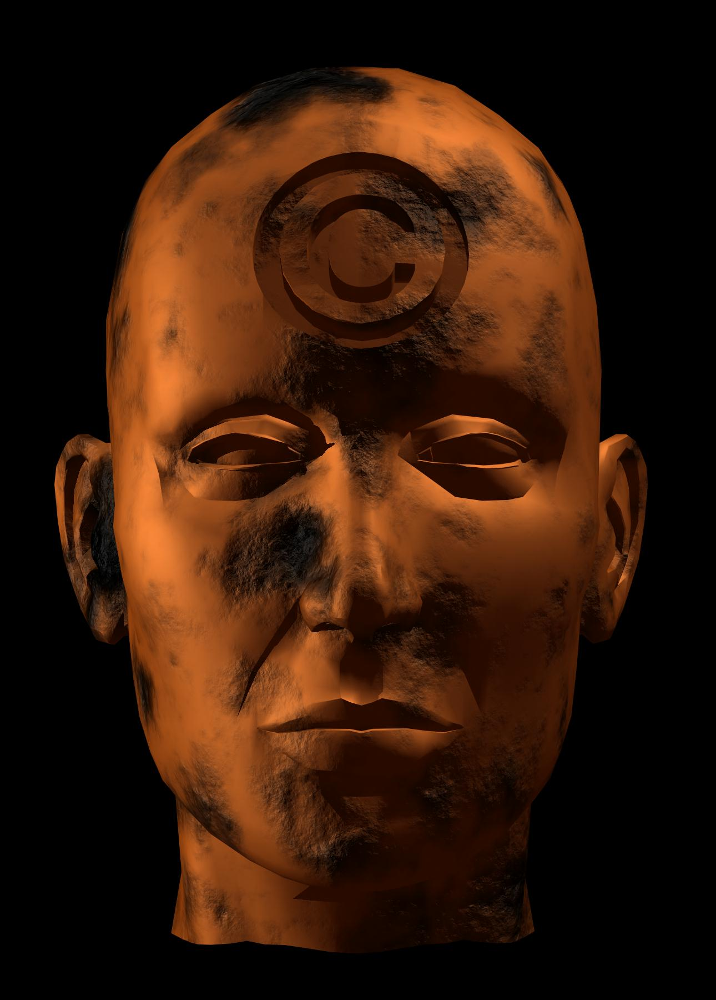
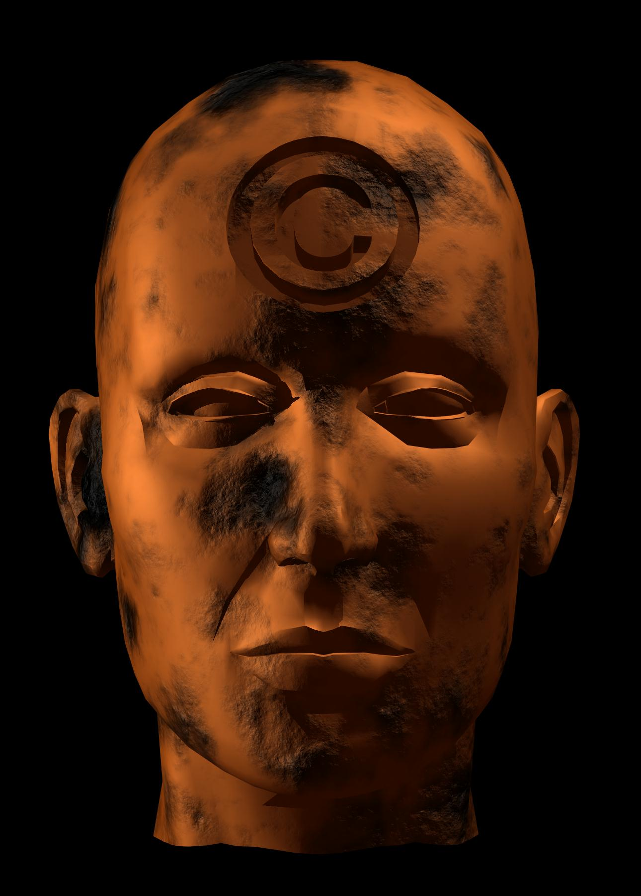

Bodies© INCorporated (1996)
Artist: Victoria Vesna
This piece shows how our bodies can get turned into data in the digital world. It's a creepy idea because it feels like we could lose ourselves to technology.
Exhibition curated by Sai Aneesh Gangishetty
For this exhibition, I’m looking at how net art explores themes of fear, identity, and technology. All of these pieces show something scary about how the internet and digital tech change who we are. Whether it's our bodies being turned into data or our identities being messed with, these works make us question what it means to be human in a tech-driven world. The pieces in this show are all about body horror, psychological horror, and the fear that comes from losing control over ourselves to technology. These works also show how the internet, for all its connections, can leave us feeling more isolated and alienated than ever.
Artist: Victoria Vesna
This piece shows how our bodies can get turned into data in the digital world. It's a creepy idea because it feels like we could lose ourselves to technology.
Artist: Lynn Hershman Leeson
This series is about digital clones of people. It's kind of scary because it plays with the idea of being replaced or watched by your own digital double.

Artist: Olia Lialina
This one’s an interactive story about someone’s partner coming back from war, but changed and distant. It’s about the horror of someone coming back unrecognizable, like they’re not the same person anymore.